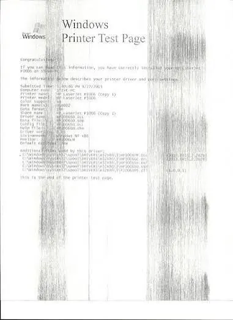
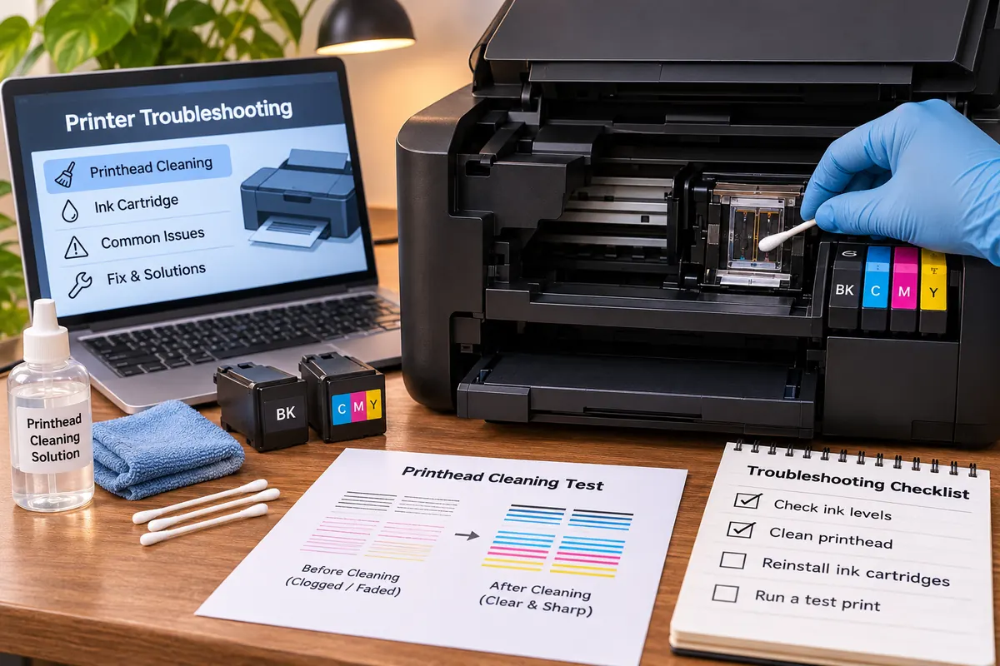

Printers
Why Are My Printouts Streaky or Faded? How to Fix Poor Print Quality
Fix streaky, faded, or uneven printer output with practical checks for ink, toner, printheads, drums, paper, settings, and maintenance.
Identify the Pattern Before Changing Settings
If you notice streaks, fading, missing lines or inconsistent colour printing then you might be tempted to tweak multiple features however taking a closer look at your page will help you identify any patterns. Vertical lines, horizontal blocks, blank sections, faded text and smudged can all help you determine what is causing the issues. If your printer has a status or nozzle check page then you should print this to identify if your printer is causing the issues.
Check if all print jobs are having issues or just one. If the issue is just with one file then take a look at how the file is formatted, images, colours and paper size selected. If all pages are having issues then focus on your printer.

Check Ink/Toner Levels and Cartridge Fitting
Low ink/toner levels can often cause faded printing. You can check your ink and toner levels by opening your printer utility or control panel. These aren’t always completely accurate but will give you an indication of if your cartridge is running low. If your cartridge has recently been replaced then check that the protective tape, seals or clips have all been removed as per your instructions. If your cartridge isn’t fitted properly then you might not get consistent ink/toner flow.
Ensure you are using compatible ink/toner cartridges for your exact printer model. Even if the cartridge looks similar it won’t always fit and communicate properly. If your printer is showing an ink/toner error then carry out the steps on screen. Don’t try to force the cartridge into place. Avoid touching any sensitive electrical parts or imaging areas. Be careful when handling toner and follow the manufacturers safety advice.
Inkjet Printer – Nozzle Check
Inkjet printers can suffer from clogged nozzles which can cause missing lines, broken text and incorrect colours. To check your nozzles, open your maintenance menu and print a nozzle check. This will show you if all the colours are flowing consistently. If there are gaps then complete the recommended printhead cleaning cycle and reprint.
Don’t repeatedly clean your printer as this can use up a lot of ink. If your nozzle check has improved then leave your printer for the recommended amount of time and reprint. If there hasn’t been any improvement then refer to your manual for further cleaning/cleaning and aligning your printhead. Some printers have replaceable printheads whilst others will require a service.
Laser Printer – Toner Cartridge and Drum
Laser printers can suffer from repeating patterns, fading, grey backgrounds and vertical streaks due to issues with your toner cartridge, drum unit, transfer parts or fuser. Firstly check your ink/toner levels and any maintenance messages. If your printer has a separate drum unit then just replacing your toner may not fix the issue.
Always follow the manufacturers instructions when removing your toner cartridge/drum. Avoid exposing your photosensitive drum to bright lighting or touching with your fingers. Don’t shake your cartridge unless specifically advised to by your manufacturer. If your test page has a repeating pattern then sometimes this can help you identify which part is rotating. However to be safe always refer to your service guide.
Use the Right Paper and Printing Settings
Using damp, curled, dusty or low quality paper can cause inconsistent printing. Always store your paper flat in the packaging. Load it into your printer tray following the guidelines. Only fan if advised by your printer manual. Don’t overfill your tray. Ensure you have selected the correct type of paper in your print driver.
Incorrect quality settings can cause your printing to appear faded. Using draft or toner save modes will save on ink/toner but can cause faded printing. If you are printing an important document then ensure you are using standard or high quality settings and the correct media type. If you are printing photographs then ensure you are using the correct photo paper and quality settings. Allow your inkjet photo prints to dry before stacking.
Clean Your Printer
Dust, paper debris and small particles can affect your printing. Always switch off and unplug your printer. Follow the instructions in your manual to clean the areas highlighted. Carefully remove any loose paper debris. Use a soft lint free cloth in the areas allowed by the manufacturer. Don’t spray any liquids inside your printer, use any household cleaners on the internal parts and don’t push any sharp items into your rollers or openings.
Some printers have a guided clean for your rollers. Ensure you are following the instructions in your manual. As laser printers can have hot internal parts ensure your printer is cooled down before attempting to access any areas highlighted for servicing. If there has been a toner leak then follow the manufacturer’s instructions for cleaning.

Update Drivers and Print Queue
Issues with your printer software can cause unexpected printing, incorrect colouring and print jobs not appearing as intended. Only download drivers and firmware from your printer manufacturers official support page. Select your exact model and operating system. If the issue started after an update then ensure you have the latest driver or if there is a rollback option.
Clear any jammed print jobs. Restart your printer and computer. Ensure you have the correct printer selected. If you are having issues with your document then ensure you aren’t trying to print to a duplicate or old printer. If possible print an inbuilt test page. If this is printing correctly but your computer documents are not then check your drivers, application or files.
Know When to Replace Parts
Some parts will need replacing due to wear and tear. Inkjet printers can suffer from printhead failure. Laser printers have consumables such as drums, transfer belt, rollers and fusers which all have a service life. If your printer is showing any maintenance messages or defects aren’t resolved by the recommended checks then check the support documentation for your model. Replacing your worn parts at the correct time can avoid any further issues.
Consider the cost of repairing your printer, how old it is and how much it’s worth. For newer office printers it might be worth getting an authorised service. For an older, cheap printer it may be cheaper to replace. Don’t attempt to open any sealed parts or try repairing anything which could expose you to hot surfaces, electricals and toner.
Troubleshooting Steps
Print an inbuilt test page. Check for any issues. Check your ink/toner levels, cartridge fitting, paper and media settings. For inkjet printers complete a nozzle check. Complete one cleaning cycle. For laser printers check your toner and drum as per your manual. Only clean areas which can be accessed. If your inbuilt test page is printing correctly but your print jobs from your computer are not then update your driver.
Only change one thing at a time. Print a small test page. This will help you identify what has fixed your issue. It will also help you avoid wasting any ink/toner. If your printer is important to your business then keep track of any recurring issues, when parts were replaced and any maintenance messages.
Conclusion
Streaky or faded printing can be caused by low ink/toner levels, clogged nozzles on inkjet printers, worn parts on laser printers, incorrect paper, settings and/or software issues. Taking a methodical approach to diagnosing the issue will be more effective. Print a test page and follow the maintenance steps for your printer type. Ensure you’re using compatible supplies. If you’re still having issues or there are internal parts then get your printer looked at by a qualified technician..
Need a hand with your printer or laptop?
Printerworld sells printers, laptops and genuine supplies, and repairs and services both. Bring in your model number and we will help you get it right.